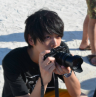
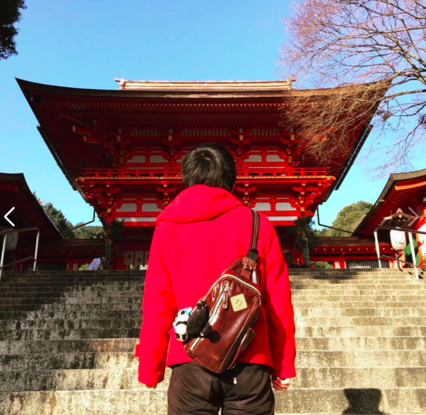
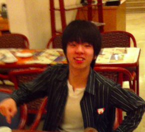
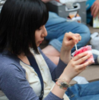
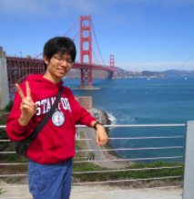
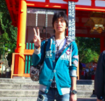

さくちゃん
全身が柔らかい体毛で覆われている小型獣である。最大種はヤブノウサギで体長 50–76 cm。
めり

食性は肉食に近い雑食性。鳥、ウサギ、齧歯類などの小動物や昆虫を食べる。
みよっしー

オスであれば体重は250キログラムを超えることもあり、ネコ科ではトラに次いで2番目に大きな種である。
アントニー

反芻動物としては比較的体は小さく、側頭部のらせん形の角と、羊毛と呼ばれる縮れた毛をもつ。原始的な品種では、短い尾など、野生種の特徴を残すものもある。
ありたく

粗末な食べ物で成長して肉や乳を得られるだけでなく、ウシよりも沼地での行動に適応しているため水田での労働力としても有用であり、経済的に非常に優れた動物である。
ばっしー

草原、半砂漠、藪地などに生息する。地表棲だが、樹上に登ることもある。昼行性。単独で生活するが、母親とその幼獣・血縁関係のある個体（兄弟など）では小規模な群れを形成することがある。
クニムー

そのゆっくりとした動作から「怠け者」という呼び名がついた。英語名の Sloth も同じく、怠惰やものぐさを意味する。体長は約41-74センチメートル。
もりちゃん

肉食性であり、ザリガニ、カエル、魚などを捕まえて食べる。小臼歯が良く発達しているため、骨まで砕いて食べてしまう。
ざきお

肉食性であり、ザリガニ、カエル、魚などを捕まえて食べる。小臼歯が良く発達しているため、骨まで砕いて食べてしまう。
はるふ
肉食性であり、ザリガニ、カエル、魚などを捕まえて食べる。小臼歯が良く発達しているため、骨まで砕いて食べてしまう。
すけさん
肉食性であり、ザリガニ、カエル、魚などを捕まえて食べる。小臼歯が良く発達しているため、骨まで砕いて食べてしまう。
もりちゃん
肉食性であり、ザリガニ、カエル、魚などを捕まえて食べる。小臼歯が良く発達しているため、骨まで砕いて食べてしまう。
ようくん

肉食性であり、ザリガニ、カエル、魚などを捕まえて食べる。小臼歯が良く発達しているため、骨まで砕いて食べてしまう。
わか

肉食性であり、ザリガニ、カエル、魚などを捕まえて食べる。小臼歯が良く発達しているため、骨まで砕いて食べてしまう。
あかさん

肉食性であり、ザリガニ、カエル、魚などを捕まえて食べる。小臼歯が良く発達しているため、骨まで砕いて食べてしまう。
あもすけ

肉食性であり、ザリガニ、カエル、魚などを捕まえて食べる。小臼歯が良く発達しているため、骨まで砕いて食べてしまう。
おりん

肉食性であり、ザリガニ、カエル、魚などを捕まえて食べる。小臼歯が良く発達しているため、骨まで砕いて食べてしまう。
りんりん

肉食性であり、ザリガニ、カエル、魚などを捕まえて食べる。小臼歯が良く発達しているため、骨まで砕いて食べてしまう。
おくむー

肉食性であり、ザリガニ、カエル、魚などを捕まえて食べる。小臼歯が良く発達しているため、骨まで砕いて食べてしまう。
すー

肉食性であり、ザリガニ、カエル、魚などを捕まえて食べる。小臼歯が良く発達しているため、骨まで砕いて食べてしまう。
すずき
肉食性であり、ザリガニ、カエル、魚などを捕まえて食べる。小臼歯が良く発達しているため、骨まで砕いて食べてしまう。
あし

肉食性であり、ザリガニ、カエル、魚などを捕まえて食べる。小臼歯が良く発達しているため、骨まで砕いて食べてしまう。
プー

肉食性であり、ザリガニ、カエル、魚などを捕まえて食べる。小臼歯が良く発達しているため、骨まで砕いて食べてしまう。
ムサシ

肉食性であり、ザリガニ、カエル、魚などを捕まえて食べる。小臼歯が良く発達しているため、骨まで砕いて食べてしまう。
ほーちゃん
肉食性であり、ザリガニ、カエル、魚などを捕まえて食べる。小臼歯が良く発達しているため、骨まで砕いて食べてしまう。
にっしー

肉食性であり、ザリガニ、カエル、魚などを捕まえて食べる。小臼歯が良く発達しているため、骨まで砕いて食べてしまう。
あし
肉食性であり、ザリガニ、カエル、魚などを捕まえて食べる。小臼歯が良く発達しているため、骨まで砕いて食べてしまう。
やまなつ

肉食性であり、ザリガニ、カエル、魚などを捕まえて食べる。小臼歯が良く発達しているため、骨まで砕いて食べてしまう。
つるちゃん

肉食性であり、ザリガニ、カエル、魚などを捕まえて食べる。小臼歯が良く発達しているため、骨まで砕いて食べてしまう。
とみー

肉食性であり、ザリガニ、カエル、魚などを捕まえて食べる。小臼歯が良く発達しているため、骨まで砕いて食べてしまう。
ねろ
肉食性であり、ザリガニ、カエル、魚などを捕まえて食べる。小臼歯が良く発達しているため、骨まで砕いて食べてしまう。
つっくん

肉食性であり、ザリガニ、カエル、魚などを捕まえて食べる。小臼歯が良く発達しているため、骨まで砕いて食べてしまう。
あゆ

肉食性であり、ザリガニ、カエル、魚などを捕まえて食べる。小臼歯が良く発達しているため、骨まで砕いて食べてしまう。